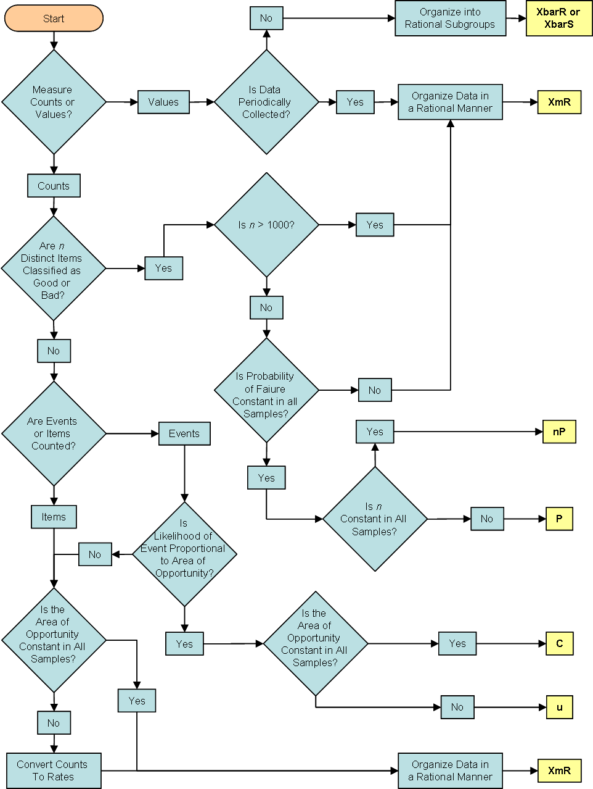

フロー図描くためだけのforkとmergeしかない言語「forkerr」
概要
無いので作っている。
https://github.com/sassembla/forkerr
ビジュアライザはgraphvizを使用するつもり。
実装はここを見てやるつもり。
http://peta.okechan.net/blog/archives/2836
理想
図を吐き出すサービスとしてはこの辺が理想なんだけど
websequencediagrams
https://www.websequencediagrams.com
世のなかにはこういうアプローチのものが少ないっぽい。
ろくなフロー図が描けるツールが無かった。
現状への不満
なんで四角形をいっぱい置いて線で繋がないといけないの？ バカなの？
なんで分岐をN個って書いただけでパァーっと広がる線がでないの？ バカなの？
なんで途中で分岐点を追加できないの？ バカなの？
どうやってバージョン管理、、あっ画像でやるの？ バカなの？
とかそのへん。
不満を殴り殺せば理想がある
ようは、
それっぽい言語でコード書いて、グラフが勝手に出るサイト作ればいいやと思った。
コンパイルエラーで不完全さもナビゲートできるし。
要件は以下
・コードで描ける
・分散(fork)と集結(merge)の2要素だけで描く
・defaultなし、そも母集合を定義したくないのでexhaustも無い
・ブロックで階層を表現
・特定のポイントへのジャンプが可能
・identifierはあるが、階層レベルの無視、有視が選択可能
・コードだからバージョン管理できる
以上が図ツールとしては必須な条件だと思っている。
これをサイト上で走らせればいい感じ。
今のところの式
fork TopLevel {
entry: {
fork SecondLevel {
a: {
}
b: {
}
c,d: {
}
withComment:COMMENT {
}
willMerge: {
merge TopLevel
}
_:{
}
}
}
_: {
merge exit
}
}
最終的にはこういうのがコードで描けると良いと思っている。
